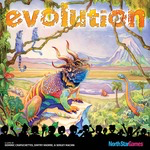

Evolution

Evolution is a board and card game, loosely based on the development of dinosaur species. It is about feeding existing populations, growing their body size, and protecting them from the attacks of vicious Carnivores.
Basic Terms and their Meaning
A watering hole board is the place where all the food tokens are available. All food is taken from here and it initially comes without any food tokens.
Food bags help players gather food tokens.
Each of the cards plays two distinct roles: a trait of a species and food. For example, it may describe whether and how a species can defend itself against attacks from a Carnivore, and at the same time, it may represent two food tokens. Depending on its role, the instructions below use food card or trait card, though these phrases may refer to the same physical card.
A species board represents a species, specifically its population size and the body size of its members. Both population and body size range between 0 and 7 (inclusive). During the game, each species board may be associated with up to three trait cards.
Playing the Game
The game is intended for three to eight players.
Every player receives a food bag at the beginning of the game. A designated dealer shuffles the deck of all trait cards and is in charge of handing cards to the players; the dealer also ensures that the players play by the rules. The order matters because players can glean information from the (non)placements of cards of those who take turns before them. Similarly, when it comes to feeding animals, the order matters because one player may attack and eat another player’s species before the second one gets to take some food. One player is randomly chosen as the first starting player; after that, the players become starting players in a round-robin fashion.
The game ends when the deck of cards runs out, that is, when the deck has become too small to hand every player the required number cards at the beginning of a turn. A player’s score is the total of (1) food tokens in the food bag, (2) populations of his existing species, and (3) number of trait cards associated with these species. Players are ranked in descending order of scores.
At the beginning the dealer hands a species board to every player who doesn’t have one; the board comes with a population count of 1 token. Each player then receives three trait cards plus one card per existing species.
Before taking any other action, every player must place one card, face down, on the watering hole board.
Now it is time for the players to decide how to use their remaining cards. In turn, each player may supplement any of his species with additional face-up cards, up to three; may place a face-down card on top of a card already associated with a species; or may exchange cards for: additional species boards, growing the body size, or increased population sizes. Specifically, one card is worth one of the following: one new species board, one additional body size (for one specific species, or one additional animal also for one specific species.
All remaining cards stay with the player for the rest of the game and can be played during subsequent turns. All traded cards are discarded for good.
A player adds new species (boards) at either end. The order remains fixed and matters for some of the species traits.
The last step is the feeding stage. The dealer turns over the food cards placed at the watering hole. Doing so adds or subtracts food tokens as specified on the trait cards to the pool of tokens available on the watering hole board; the food supply does not go below 0. It also activates the auto-feeding trait cards that players have associated with their species; the food is taken from the watering hole.
Yes, this may turn a vegetarian species into a carnivore.
The players turn over the face-down cards they associated with their species boards during the first step and remove the one that the card covered up. The latter cards are discarded for good.(1) Other than when explicitly mentioned in trait cards or rules, body size does not play any role during feeding or attacks.
(2) When it comes to feeding, a player may feed species S for the first turn, species T on the second one, S again on the third one, and whatever species is desired on the fourth.
Beginning with the current starting player, the players feed their species one animal at a time in a round-robin fashion:A vegetarian species is fed one token from the watering hole supply.
A Carnvivore species must is directed to successfully attack some other species, including a species of the same player, or die. The attack adds a food token to the Carnivores’ species board and reduces the population size of the attacked species by one. The player may direct the attack against a different species for each feeding round.
The acquired food tokens are temporarily stored with the species board. A food token cannot be added if it takes the total beyond the population count. Either of these actions may trigger additional "induced" feedings, depending on the traits associated with currently existing species, including those of others, currently passive players.The feeding procedure continues until every species board has consumed as many food tokens as there are members of the population, or there is no more food on the watering hole board. All left-over food tokens remain on the watering hole board.
Trait Cards
Carnivore must attack to eat during the feeding stage.
Ambush overcomes a Warning Call during an attack.
Burrowing deflects an attack when its species has a food supply equal to its population size.
Climbing prevents an attack unless the Carnivore also has the Climbing attribute.
Cooperation automatically feeds the species to its right one token of food every time it eats (taken from the common food supply at the watering hole).
Fat Tissue allows a species to store as many food tokens as its body-size count. In a physical game, the additional food is stored on the actual card. It must be used to feed the species at the beginning of the next feeding round, before any food is taken from the watering hole.
Fertile automatically adds one animal to the population when the food cards are revealed.
Foraging enables this species to eat two tokens of food for every feeding.
Hard Shell prevents an attack unless the attacker is at least 4 units larger than this species in body size.
Herding stops attacks from Carnivore species whose populations are smaller or equal in size to this species’ population.
Horns kills one animal of an attacking Carnivore species before the attack is completed.
Long Neck automatically adds one food token for the entire species when the food cards are revealed.
Pack Hunting adds this species’ population size to its body size for attacks on other species.
Scavenger automatically eats one food token every time a Carnivore eats another species.
Symbiosis prevents an attack if this species has a neighbor to the right whose body size is larger than this one’s.
Warning Call prevents an attack from a Carnivore on both neighboring species unless the attacker has the Ambush property.